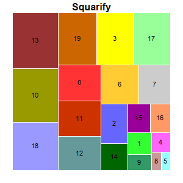
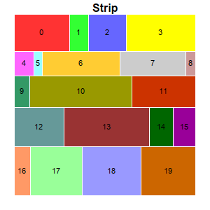
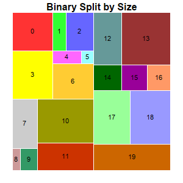
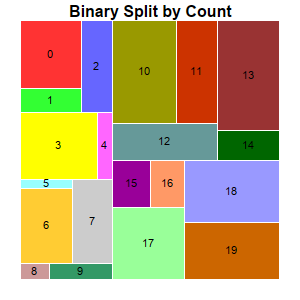
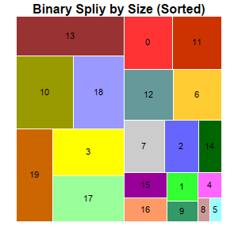

The example demonstrates various tree map layout methods configurable using TreeMapNode.setLayoutMethod.
ChartDirector 7.1 (C++ Edition)
Tree Map Layout





Source Code Listing
#include "chartdir.h"
void createChart(int chartIndex, const char *filename)
{
// Random data for the tree map
RanSeries* r = new RanSeries(3);
DoubleArray data = r->getSeries(20, 20, 400);
// Create a Tree Map object of size 300 x 300 pixels
TreeMapChart* c = new TreeMapChart(300, 300);
c->setPlotArea(20, 20, 260, 260);
// Obtain the root of the tree map, which is the entire plot area
TreeMapNode* root = c->getRootNode();
// Add first level nodes to the root.
root->setData(data);
if (chartIndex == 0) {
// Squarity - Layout the cells so that they are as square as possible.
c->addTitle("Squarify");
root->setLayoutMethod(Chart::TreeMapSquarify);
} else if (chartIndex == 1) {
// Strip layout - Cells flow from left to right, top to bottom. The number of cells in each
// row is such that they will be as close to a square as possible. (The setLayoutMethod also
// supports other flow directions.)
c->addTitle("Strip");
root->setLayoutMethod(Chart::TreeMapStrip);
} else if (chartIndex == 2) {
// Binary Split by Size - Split the cells into left/right groups so that their size are as
// close as possible. For each group, split the cells into top/bottom groups using the same
// criteria. Continue until each group contains one cell. (The setLayoutMethod also supports
// other flow directions.)
c->addTitle("Binary Split by Size");
root->setLayoutMethod(Chart::TreeMapBinaryBySize);
} else if (chartIndex == 3) {
// Binary Split by Count - Same as "Binary Split by Size", except that the cell count
// (instead of the size) is used to split the cells.
c->addTitle("Binary Split by Count");
root->setLayoutMethod(Chart::TreeMapBinaryByCount);
} else if (chartIndex == 4) {
// Binary Split by Size (Sorted) - Same as "Binary Split by Size" except the cells are
// sorted first.
c->addTitle("Binary Split by Size (Sorted)");
root->setSorting(-1);
root->setLayoutMethod(Chart::TreeMapBinaryBySize);
}
// Get the prototype (template) for the first level nodes.
TreeMapNode* nodeConfig = c->getLevelPrototype(1);
// Set the label format for the nodes to show the label and value with 8pt Arial Bold font in
// black color (000000) and center aligned in the node.
nodeConfig->setLabelFormat("{index}", "Arial", 8, 0x000000, Chart::Center);
// Set automatic fill color and white (ffffff) border
nodeConfig->setColors(Chart::DataColor, 0xffffff);
// Output the chart
c->makeChart(filename);
//free up resources
delete r;
delete c;
}
int main(int argc, char *argv[])
{
createChart(0, "treemaplayout0.png");
createChart(1, "treemaplayout1.png");
createChart(2, "treemaplayout2.png");
createChart(3, "treemaplayout3.png");
createChart(4, "treemaplayout4.png");
return 0;
}